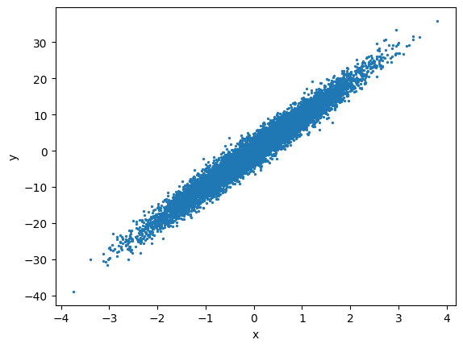

A single deep decision tree memorised the training data perfectly and failed on new rows.
Nisha's instinct was to prune it. But a shallow tree was too simple to be useful.
One tree is either too eager or too dull. The fix is not a better tree — it is more of them.
Random Forest grows hundreds of trees on different random slices and averages the vote, so individual mistakes cancel out. Boosting goes the other way: each new tree is built specifically to correct what the previous ones got wrong.
🔑 The one idea
Bagging averages many independent models; boosting builds each new one to fix the last one's mistakes.
One doctor reads your report and says "you are fine".
Would you bet your life on that one opinion? Most people ask a second
doctor. Maybe a third. If four out of five say the same thing, you relax.
That is this whole notebook.
one model = one doctor
an ENSEMBLE = a panel of models, answering together
Why is a panel better than one expert?
Because every model is wrong in its own way. One tree gets confused by a
strange row. Another tree gets confused by a different row. When you count
their answers, the mistakes do not line up, so they cancel each other out.
The thing they all agree on is usually the truth.
You already trust this idea in Java. One service instance can go bad. Five
instances behind a load balancer, and one bad instance does not decide the
response.
Three ways to build the panel
way
how the panel is built
in this notebook
Bagging
many models learn at the same time, each on a different random slice of the data, then they vote
RandomForestClassifier, RandomForestRegressor
Boosting
models learn one after another, each new one works on what the previous one got wrong
AdaBoostClassifier, GradientBoostingClassifier
Voting
you pick different kinds of models yourself, then they vote
VotingClassifier
In everyday words:
Bagging - five people read five different chapters, then discuss.
Boosting - one person studies, fails question 7, studies question 7
again, and again, until the weak spots are gone.
Voting - a doctor, a chemist and a nurse in one room.
BAGGING (all at once) BOOSTING (a chain)
data --> tree 1 \ data --> m1 --> what it got wrong
data --> tree 2 >-- vote |
data --> tree 3 / v
(100 trees) m2 --> what is still wrong
|
v
m3 --> final answer
codecell 2
import pandas as pd
from sklearn.datasets import load_iris
iris = load_iris()
table = pd.DataFrame(iris.data,columns=iris.feature_names)
table.head()
150 flowers. 4 measurements each. 3 species, written as 0, 1, 2.
x = the four measurements. y = the species you want to predict.
The split gives 105 rows to learn from and 45 rows for the exam.
45 is a small exam. One flower is worth 2.2%. Keep that in mind when you
read every score below.
codecell 5
x = table.drop(['target'], axis='columns')
y = iris.target
codecell 6
from sklearn.model_selection import train_test_split
X_train, X_test, y_train, y_test = train_test_split(x, y, test_size = 0.30, random_state = 0)
1. Random Forest - the bagging family
Why it exists
A single decision tree memorises. Let it run free and it keeps splitting
until every leaf is pure. It looks brilliant on the data it saw, then trips
on the first new row.
The fix is not a smarter tree. The fix is many trees, each wrong in a
different way.
How the forest keeps its trees different
Two bits of randomness:
Different rows. Each tree gets its own random sample of the 105
training rows, picked with repeats. So tree 1 never sees exactly what
tree 7 sees.
Different columns. At each split a tree may only look at a few of
the 4 measurements, not all of them. This stops one very strong column
(petal length) from being the first question in all 100 trees.
Then the 100 trees vote. Majority wins.
105 training rows
|- random sample --> tree 1 --> says 2
|- random sample --> tree 2 --> says 2
|- random sample --> tree 3 --> says 1
... (100 trees)
vote --> answer: 2
Where it is used
Credit scoring, churn, fraud, "which customers will renew". Anywhere you
have a table of columns and need a solid answer without much tuning. On
tabular data this is the normal first thing to try.
The syntax
n_estimators=100 - how many trees to grow. More trees = steadier
answer, slower training. Raising it does not overfit, it only costs time.
.fit(X_train, y_train) - grows all 100 trees.
.score(X_test, y_test) - the share of the 45 test flowers it got right.
codecell 8
from sklearn.ensemble import RandomForestClassifier
classifier = RandomForestClassifier(n_estimators=100)
classifier.fit(X_train, y_train)
Output
RandomForestClassifier()
codecell 9
classifier.score(X_test,y_test)
Output
0.9777777777777777
0.9777 means 44 correct out of 45. One flower wrong.
2. AdaBoost - the boosting family
Why it exists
The forest builds all its trees at once, and no tree knows what the others
got wrong. Nobody is working on the hard cases.
Boosting has the opposite habit. It builds one model, looks at the rows it
got wrong, and then builds the next model paying extra attention to
exactly those rows.
The story
A teacher gives a test. Five students fail question 7.
She does not repeat the whole syllabus. She marks question 7 in red and
teaches that one again. Next test, fewer people fail it. She repeats this
100 times.
That red mark is a weight. Every training row carries one.
Row predicted right -> its weight goes down. Move on.
Row predicted wrong -> its weight goes up. The next model must fix it.
At the end each small model also gets a vote weight. A model that was
accurate speaks loudly. A model that was barely better than a coin toss
whispers. The final answer is that weighted vote.
round 1: all rows equal --> model 1 --> 8 rows wrong
round 2: those 8 rows heavy --> model 2 --> 3 rows wrong
round 3: those 3 rows heavy --> model 3 --> ...
final answer = loud vote of the good models
+ soft vote of the weak ones
The syntax
estimator=DecisionTreeClassifier(max_depth=3) - the small model that
gets repeated. Depth 3 means it may ask only 3 questions. Boosting wants
a weak learner on purpose. Hand it a full deep tree and there is no
mistake left for the next round to fix.
n_estimators=100 - how many rounds of learn -> look at mistakes ->
learn again. Here it is the length of a chain, not the size of a crowd.
codecell 12
from sklearn.ensemble import AdaBoostClassifier
from sklearn.tree import DecisionTreeClassifier
Also 44 out of 45. Exactly the same as the forest.
Iris is an easy dataset - three flower types that separate cleanly. On easy
data every decent model lands in the same place. Ensembles show their real
gap on messy data.
3. Gradient Boosting - boosting by chasing the leftover
Why it exists
AdaBoost fixes mistakes by making rows heavier.
Gradient Boosting fixes them a different way: each new tree predicts the
leftover error of everything built so far.
The story
You guess a house price: 50 lakh. The real price is 62.
The leftover is +12. You do not throw your guess away. You train a second
small model whose only job is to predict that +12. Now your answer is
50 + 12 = 62. Then you look at the new leftover and build a third model
for that one.
Each tree is an apology for the answer before it.
learning_rate - the one setting to really understand
You do not add the whole correction. You add a slice of it.
learning_rate = 1.00 -> 50 + 12.00 = 62.00 one big jump, easy to overshoot
learning_rate = 0.01 -> 50 + 0.12 = 50.12 one tiny careful step
Small rate = careful steps = you need many more trees to arrive.
Your cell uses learning_rate=0.01 with n_estimators=100, so 100 very
small steps. On a harder dataset that would still be far from the target.
Iris is easy enough that it gets there anyway.
Rule of thumb: lower the rate, raise the trees. The two pull against
each other.
Where it is used
This family, and its faster cousins XGBoost and LightGBM, wins most
tabular competitions and runs a lot of real risk and ranking systems.
Slower to train than a forest, usually a little more accurate, and much
more sensitive to its settings.
codecell 18
from sklearn.ensemble import GradientBoostingClassifier
4. Voting Classifier - a panel of different experts
Forest and boosting both build one kind of model, many times.
Voting is different. You choose several different algorithms yourself
and let them vote.
Why bother? Because a tree, an SVM and a KNN are wrong in very different
ways. A tree cuts the space into boxes. An SVM draws one clean boundary.
KNN just asks the nearest neighbours. When three minds that different
agree, the answer is worth trusting.
The syntax
estimators is a list of (name, model) pairs. The name is only a label
so you can pull that model out later - like a bean name in Spring.
codecell 23
from sklearn.ensemble import VotingClassifier
from sklearn.svm import SVC
from sklearn.linear_model import LogisticRegression
from sklearn.tree import DecisionTreeClassifier
from sklearn.neighbors import KNeighborsClassifier
A model that is 51% sure and a model that is 99% sure both raise exactly
one hand. Hard voting throws confidence away.
codecell 26
final = VotingClassifier(estimators=estimators, voting='hard')
codecell 27
final.fit(X_train, y_train)
Output
/Users/kaliprasad/Documents/MACHINE_LEARNING/pizza_env/lib/python3.14/site-packages/sklearn/svm/_base.py:239: FutureWarning: The `probability` parameter was deprecated in 1.9 and will be removed in version 1.11. Use `CalibratedClassifierCV(SVC(), ensemble=False)` instead of `SVC(probability=True)`
warnings.warn(
VotingClassifier(estimators=[('m1', RandomForestClassifier(n_estimators=5)),
('m2', SVC(probability=True)),
('m3', KNeighborsClassifier(n_neighbors=3)),
('m4',
AdaBoostClassifier(estimator=DecisionTreeClassifier(),
n_estimators=5)),
('m5', LogisticRegression())])
codecell 28
for m in (final.estimators_):
print (m.score(X_test,y_test))
final.estimators_ - note the underscore at the end. That is the sklearn
habit you have seen before: a name ending in _ only exists after
fit(). It holds the five trained models.
Without the underscore, final.estimators is just the list of untrained
recipes you typed.
All five print 0.9777. Five different algorithms, the same 44 out of 45.
Another sign that iris is easy - not that the five models are the same.
A confident model now pulls harder than an unsure one. Soft voting is
usually a bit better, on one condition: the probabilities must be honest.
That is why SVC(probability=True) is there. A plain SVM only tells you
which side of the line you are on, not a probability, so probability=True
fits an extra step that turns distance into probability.
Your output shows a FutureWarning: sklearn is moving that job to
CalibratedClassifierCV(SVC(), ensemble=False). The code still runs today.
codecell 34
final = VotingClassifier(estimators=estimators, voting='soft')
final.fit(X_train, y_train)
Output
/Users/kaliprasad/Documents/MACHINE_LEARNING/pizza_env/lib/python3.14/site-packages/sklearn/svm/_base.py:239: FutureWarning: The `probability` parameter was deprecated in 1.9 and will be removed in version 1.11. Use `CalibratedClassifierCV(SVC(), ensemble=False)` instead of `SVC(probability=True)`
warnings.warn(
VotingClassifier(estimators=[('m1', RandomForestClassifier(n_estimators=5)),
('m2', SVC(probability=True)),
('m3', KNeighborsClassifier(n_neighbors=3)),
('m4',
AdaBoostClassifier(estimator=DecisionTreeClassifier(),
n_estimators=5)),
('m5', LogisticRegression())],
voting='soft')
codecell 35
for m in (final.estimators_):
print(m.score(X_test,y_test))
The soft transform() output is wider: 15 columns = 5 models x 3
classes. Read each row in groups of three, exactly like the table above.
5. Random Forest Regressor - the same forest, for numbers
Everything above predicted a class, so voting made sense. For a number
there is nothing to vote on, so the forest averages instead.
classification -> 100 trees, the majority class wins
regression -> 100 trees, the mean of their 100 numbers
Nothing else changes. Same random rows, same random columns, same idea.
make_regression(n_features=1, noise=2, n_samples=10000) builds 10000 fake
points sitting on a straight line with a little noise, so you can see the
shape before you fit anything.
codecell 39
from sklearn.datasets import make_regression
x,y = make_regression(n_features=1, noise=2, n_samples=10000,random_state=0)
import matplotlib.pyplot as plt
plt.scatter(x,y,s=2)
plt.xlabel('x')
plt.ylabel('y')
plt.show()

Output from this notebook.
codecell 40
from sklearn.ensemble import RandomForestRegressor
reg = RandomForestRegressor(n_estimators=100)
reg.fit(x, y)
Output
RandomForestRegressor()
codecell 41
reg.score(x, y)
Output
0.9911716974219119
0.991 here is R²: the model explains about 99% of the movement in y.
One honest warning. This line scores on x, y - the same data the forest
learned from. That is the model marking its own homework. A forest can
nearly always score high on rows it has memorised.
The 0.977 scores earlier were measured on X_test, which those models had
never seen. Only those are real. To get a true number here, split first and
score on the test part.
Putting it together
model
family
how it learns
score
RandomForestClassifier
bagging
100 trees at once, random rows + random columns, majority vote
0.978
AdaBoostClassifier
boosting
100 depth-3 trees in a chain, wrong rows get heavier
0.978
GradientBoostingClassifier
boosting
100 trees, each predicts the leftover error, in tiny 0.01 steps
0.978
VotingClassifier(hard)
voting
5 different algorithms, one vote each
0.978
VotingClassifier(soft)
voting
the same 5, probabilities averaged
0.978
RandomForestRegressor
bagging
100 trees, their numbers averaged
0.991 R², but on training data
Everything ties at 44 out of 45. That is the dataset talking, not the
models. Iris has three clean species; one flower sits on the border and
every model misses that same one.
Where they really differ:
what you want
pick
a fast, safe first model with little tuning
Random Forest
the last bit of accuracy, and you have time to tune
Gradient Boosting
you already have 3-4 good models of different kinds
Voting, soft
noisy data with odd outliers
Random Forest - boosting chases noisy rows and can learn the noise
If you remember only one thing...
Bagging builds a crowd. Boosting builds a chain.
A crowd cancels out unstable guesses. A chain keeps fixing what is still
wrong. Both beat one model, for two completely different reasons.
✍️ Handwritten notes
The pages written by hand while working through this topic — the version that came before the tidy write-up. Click any page to enlarge.